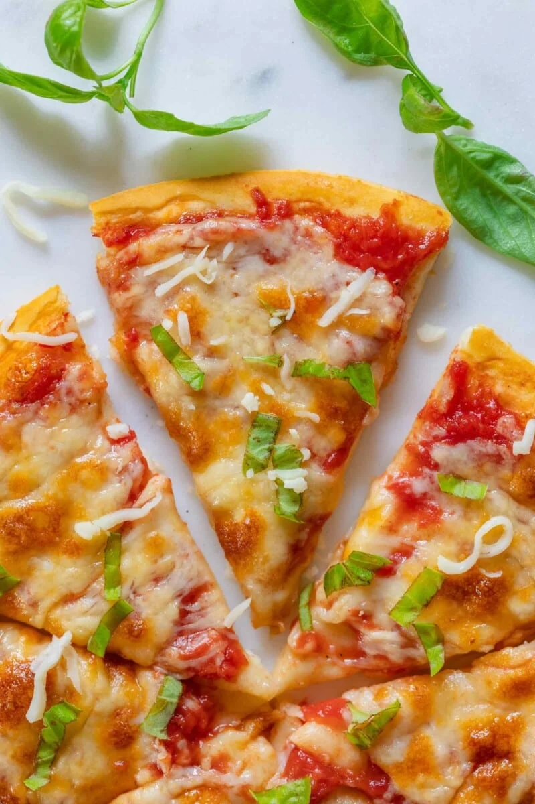

Vegan Pizza

Description
Making vegan pizza from scratch is a breeze thanks to this simple,
easy-to-follow recipe! The fluffy pizza crust is easy to make ahead of
time (and even leaves you with extras), and the topping options are
endless.
Ingredients
For the pizza:
- Yeast
- Water
- All purpose flour
- Salt
- Olive oil
For the toppings:
- Pizza sauce
- Vegan mozzarella cheese
- Vegan cheddar cheese
- Italian seasonings
Steps
- Activate the yeast:
Whisk the yeast and lukewarm water together in a heatproof jug or bowl.
Let it sit for a few minutes or until it becomes frothy (this shows that
your yeast is alive!).
- Start the dough:
Mix the salt and flour in a large bowl and make a well in the center.
Pour the yeast/water mixture and the oil into the middle. Gently mix the
dough until it forms a ball.
- Knead, then let it rise:
Gently knead the dough on a lightly floured surface until it smooths
out. Transfer the ball of pizza dough to a lightly greased bowl, cover
it with plastic, and let it rise in a warm area until it’s doubled in
size.
- Knead again:
Once it’s doubled, knead the dough again on a lightly floured surface.
Cut it into two balls. Wrap one of the balls in plastic and keep it in
the freezer for later. The other ball will be used to make the vegan
pizza!
- Par-bake the crust:
Roll out the ball of dough into a circle (about 12 inches in diameter).
Place it on a pizza pan and par-bake in the oven.
- Add the toppings and bake again:
Spread the pizza sauce over the par-baked crust, then add the vegan
cheese and Italian seasonings. Bake the pizza again until the crust is
golden and the “cheese” has melted. Enjoy!